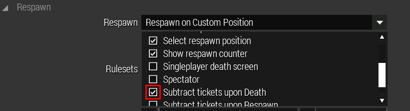
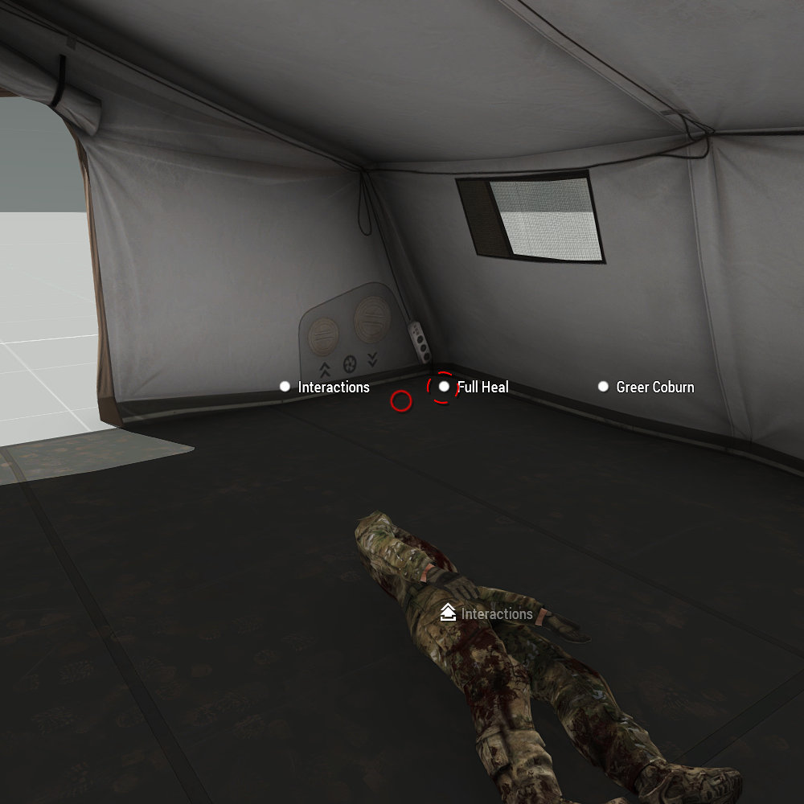
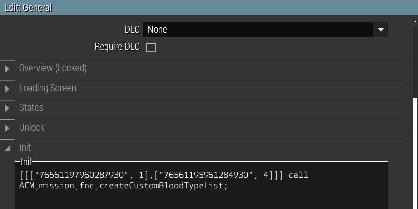
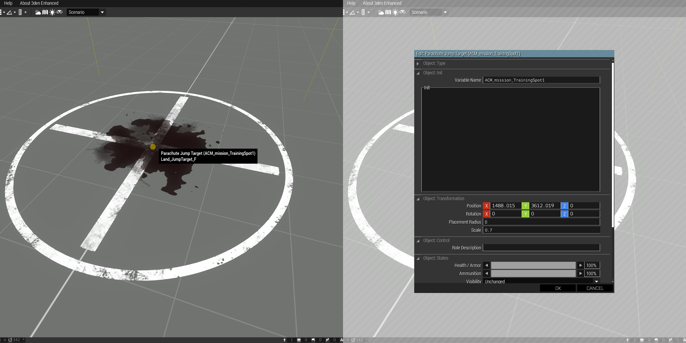
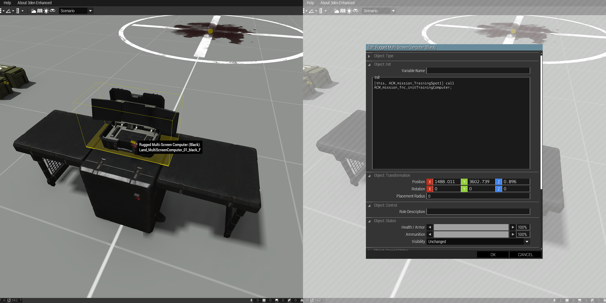

Mission Functions
Contents
Evacuation Addon Setup
The Evacuation addon allows player casualties to be converted into AI ones, the players are then able to reinforce at a pre-defined location and the casualty evacuated at a later point.
This reinforce point needs to be defined to set where the players will be teleported to after conversion, this should be at a pre-established friendly position, preferably close to a transport method the players will use to get back.
The evacuation object(s) need to be defined to allow the casualty to be evacuated and to return the used casualty ticket, this should be at a pre-established friendly position, potentially inside a medical building.
Additionally if use of respawn tickets is desired (recommended), respawn ticket subtraction needs to be enabled in the mission attributes.
Defining evacuation and reinforce points
Reinforce Point
The Reinforce Point defines where converted players will be teleported to.
- Only one Reinforce Point per faction will be active at once, if there are multiple the last initialized will be used
Module Attributes
Player Side - Define which faction the reinforce point is intended for
Evacuation Point
The Evacuation Point controls what objects can be used to evacuate converted casualties.
- The target object must not be a simple object
- The target object(s) should be made indestructible to avoid issues
Module Attributes
Player Side - Define which faction the evacuation point is intended for
Interaction Distance - Default: 5
Interaction Position - Default: [0,0,0]
Enabling respawn ticket subtraction in mission file
Enable ticket subtraction upon unit death, this will make player and converted casualty deaths in the player faction consume respawn tickets.

Full-Heal Facility
The full-heal facility allows easily defining objects that can fully heal select or all units inside it.
- The target object must not be a simple object
- The target object(s) should be made indestructible to avoid issues
Module Attributes
Interaction Distance - Default: 5
Interaction Position - Default: [0,0,0]

Custom Blood Type List
The custom blood type list allows overwriting SteamID-based blood types, and setting specific blood types for each player, for example based on the player’s real blood type.
A function needs to be entered into the mission init field which will define the set blood types of select SteamIDs.
Enabling custom blood type list in circulation settings
Defining Blood Types
- Enter this code into the init field in the mission attributes:
[[["<STEAMID>",<ID>]]] call ACM_mission_fnc_createCustomBloodTypeList;
- This will bind the desired blood type to the set SteamID(s).
| Blood Type | ID |
|---|---|
| O+ | 0 |
| O- | 1 |
| A+ | 2 |
| A- | 3 |
| B+ | 4 |
| B- | 5 |
| AB+ | 6 |
| AB- | 7 |
Example:
[[["76561197960287930",1],["76561195961284930",4]]] call ACM_mission_fnc_createCustomBloodTypeList;
- 76561197960287930 will have blood type O-, and 76561195961284930 will have blood type B+.

Casualty Spawner
The casualty spawner allows easily adding a way to spawn casualties with varying severity for training purposes.
The reference object needs to be created to set where the casualties will be spawned.
The training computer object needs to be created to allow the player to spawn casualties at the set severity.
Reference Object
- Create a new object and set its variable name to something unique (eg.
ACM_mission_TrainingSpot1).- This variable will be used in the training computer object to reference this one.
- This object will be used as a reference where the casualties should spawn, it can be hidden if required.

Training Computer
- Create a new object and enter this code into its init field:
[this, variable] call ACM_mission_fnc_initTrainingComputer- Where
thisis the interaction object, andvariableis the variable name of the reference object (eg.ACM_mission_TrainingSpot1).
- Where
- This object will have all the ACE interactions for spawning, healing and clearing casualties.
